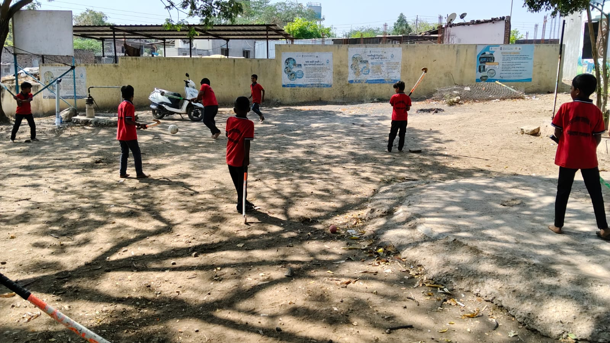

All Grades
Champions on the Playground
खेळ, मैदानी स्पर्धा व शारीरिक शिक्षण (Sports & Games)
Every afternoon, our spacious ground echoes with cheering and boundless energy! Our children excel in traditional Indian sports and athletics, building speed, stamina, and team spirit.
Traditional Games: Kabaddi (कबड्डी), Kho-Kho (खो-खो), Langadi, and ring tennis.
Athletics & Drills: Sprint relays, high jumps, lemon-spoon coordination, and daily morning PT drills.
Physical Stamina
Teamwork & Strategy
Sportsmanship
Agility